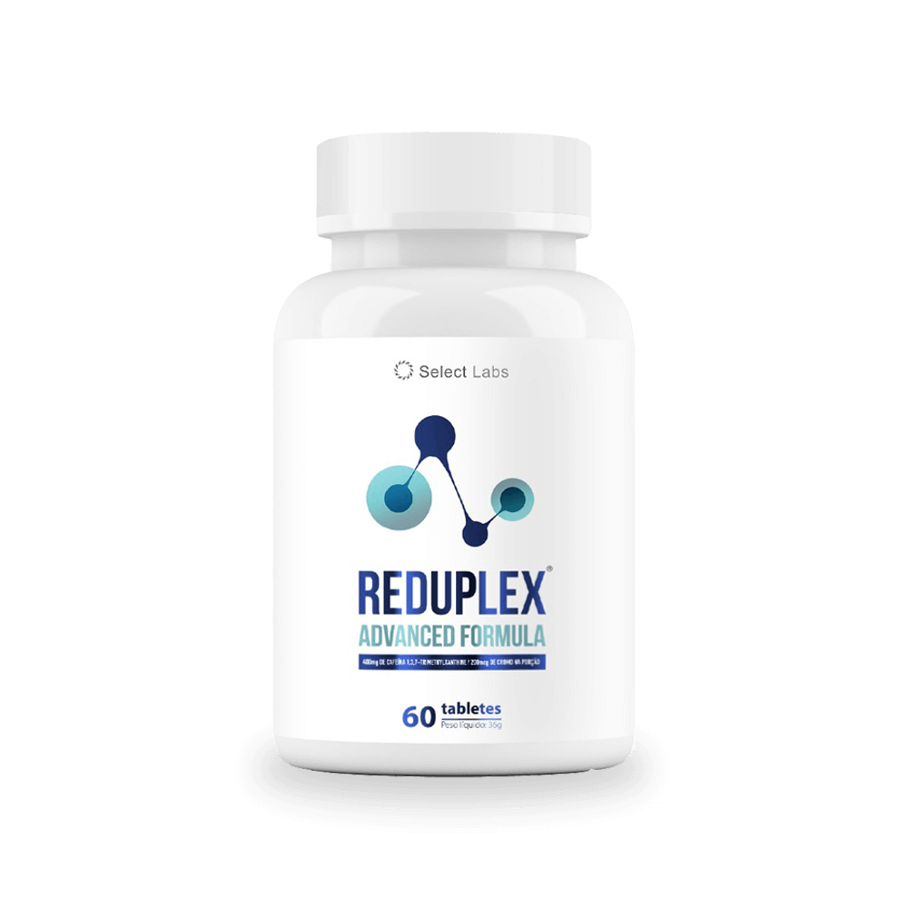

O que é o Reduplex?
Reduplex é um suplemento em cápsulas que tem o próposito de emagracer de forma saudável.
Quero ver o site oficial
tem garantia?
Sim. O Reduplex conta com uma garantia de 30 dias. Pelo site oficial. Caso tenha adiquirido mais de 1 frasco, a garantia se aplica a todos.
como funciona?
Os componentes do REDUPLEX, assim que penetram no estômago, funcionam juntos para acabar com a gordura, toxinas e impurezas para emagrecer o seu corpo e restaurar a sua saúde!
qual a composição?
As cápsulas contêm 0,25g de Espirulina, 0,25g de Psylliuum, 250mcg de Cromo e 100mg de Cafeina.
Tem efeitos colaterais?
O produto não é recomendável para gestantes, lactantes e menores de 18 anos. Por ser um produto composto exclusivamente de ingredientes naturais, não possui nenhum efeito colateral e não tem nenhuma contraindicação, com exceção do grupo supracitado. Consulte sempre um médico ou nutricionista antes de iniciar o consumo caso haja dúvida.
como usar?
Reduplex deve ser tomado diariamente, 2 capsulas. Sempre ingerir com líquidos. Recomendamos o uso por no mínimo 3 meses para um resultado surpreendente.
prazo de entregua?
O prazo de entrega é de 3 a 10 dias úteis, podendo variar de acordo com a localização
Veja mais no Site oficial
Quais são as promessas do Reduplex?
- Ajudar a reduzir a barriga
- Acelerar o metabolismo
- Queima de gorduras
- Controle de apetite
- Combate a celulites
- Emgracimento natural
Benefícios dos ativos do Reduplex
A espirulina é uma alga rica em proteínas, vitaminas e minerais. Ela ajuda a emagrecer promovendo a saciedade, o que reduz o apetite. Além disso, seus antioxidantes melhoram a saúde celular e o metabolismo. A espirulina também aumenta a energia e a disposição devido às suas vitaminas e minerais essenciais.
O psyllium é uma fibra natural que, ao absorver água, se expande no estômago, proporcionando uma sensação de plenitude que ajuda a controlar o apetite. Ele também melhora a digestão e elimina toxinas, favorecendo a saúde intestinal. Além disso, o psyllium estabiliza os níveis de glicose no sangue, evitando picos de insulina e o acúmulo de gordura.
O cromo é um mineral que ajuda a regular os níveis de glicose no sangue, melhorando a resposta à insulina e reduzindo o armazenamento de gordura. Ele também ajuda a diminuir os desejos por doces, estabilizando os níveis de açúcar no sangue. O cromo ainda contribui para a manutenção da massa muscular, o que aumenta a queima de calorias.
A cafeína é um estimulante natural que aumenta o metabolismo e a termogênese, ajudando a queimar mais calorias. Ela melhora o desempenho físico e aumenta a energia, facilitando a prática de exercícios. A cafeína também pode atuar como supressor de apetite, ajudando a reduzir a ingestão calórica.
Conclusão
Combinar espirulina, psyllium, cromo e cafeína pode ajudar a emagrecer de forma mais saudável. Esses componentes promovem saciedade, melhoram o metabolismo e aumentam a energia. Para melhores resultados, mantenha uma alimentação equilibrada e pratique exercícios regularmente, sempre com orientação profissional.
Onde comprar com segurança?
Faça a compra somente no Site oficial para garantir que seja feita de forma segura. Somente em canais oficiais do produto